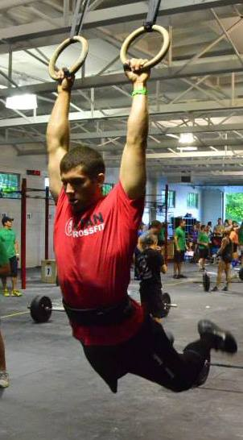

COACHES
Ben Dziwulski
Ben is a Maryland native that started doing CrossFit his Freshman year at North Carolina State University. After a couple years of trying to do CrossFit on his own, he found his home at Raleigh’s premier CrossFit gym, CrossFit Invoke, where he learned under CrossFit Headquarter Trainer, Christmas Abbott. After completing his CFL1 Trainer Course, he became a coach at Invoke. Since then, he has been coaching and competing for a couple years, trying to become a better coach each day. After graduating from college and moving back to Maryland, he was given the opportunity to coach at Titan CrossFit in Timonium, MD, where he learned even more about proper coaching, programming, and gym management from a fantastic group of people.
Current Courses/accreditations
CrossFit CFL1 Trainer Course
CrossFit Coach’s Prep Course
CrossFit Judge’s Course
CFW Olympic Lifting Course
Favorite thing about CrossFit
"I love watching people exceed their own expectations. Whether it is getting their first pullup, muscle up, or being able to walk up the stairs without getting winded. CrossFit enables us to use our bodies the way that God intended them- as perfect machines that he designed."
Favorite quote:
"He is above all things and in him all things hold together.” Colossians 1:17
Josh Burford

Josh Burford is a Maryland native that began his professional career in the fitness industry in 2006 working with elementary to collegiate level athletes. In 2007 he became an NSPA CPT and began developing individualized strength and conditioning programs and bootcamps for clients of all fitness levels. In 2011 a friend recommended giving CrossFit a chance. He began training at CrossFit Diesel and was truly introduced to the sport of fitness. After working out at this CrossFit facility for 6 months he began building a garage gym in his parents barn. It wasnt until he came across a video on CrossFit.com (Hope for Kenya) that he realized he could influence not only athletes but the surroundings community in a positive way. He completed his CrossFit CFL1 trainer course in April of 2013. He was welcomed by CrossFit Titan to shadow some amazing coaches to help hone his skills and take his coaching to the next level.
Current Courses/Accreditation
CrossFit CFL1 Trainer Course
NutraMetrix NC
Favorite Thing About CrossFit
Watching people better themselves, and watching the CrossFit community reach outside the walls of the gym to help make a difference.
FACILITY
Equipment


Rogue Fitness makes top-of-the line, 100% American Made, fitness equipment and is the ONLY choice for the Reebok CrossFit Games. We appreciate quality, and have outfitted the gym to last! As we grow, so will our equipment, including sleds, logs, tires, and all kinds of fun workout items!
Here is a list of gear (Ben calls them toys) that we already have and/or will be adding soon!
Rogue Barbells (Mens, Womens, 15lb Trainers)
Rogue Hi-Temp Bumper Plates
Rogue Infinity Pullup Rig
Rogue Squat Racks
Rogue Kettlebells (18lb-70lb)
Rogue Speed Jumpropes
Rogue Elastic Bands
Plyo Boxes
Gymnastic Rings
Climbing Rope
Dedicated Olympic Lifting Platform
Concept 2 Rowers
Dynamax Medicine Balls (8lb-30lb)

Wodify is an incredible software that makes everything in CrossFit seamless. From workout tracking, nutrition logging, and membership services- Wodify does it all. You will never have to guess what your old Back Squat "PR" is again- it will be right at your fingertips electronically via any smartphone (via Wodify App) or computer. With our in-house kiosk, you will be able to sign-in, record data, and track your friends' scores all with a few mouse clicks. Even better, Wodify comes with you via their smart phone application. The team here at Blue Crab CrossFit is absolutely STOKED to put this service to use, because ultimately it will make YOU- our athlete- better!
GYM RULES
1. Stay humble. Leave your ego at the door.
2. Clean up! Leave things like you found them.
3. Don’t clean up until the last person is finished! Cheer them on.
4. Introduce yourself, we are all family here.
5. NEVER drop an empty barbell.
6. No Steelers fans.
7. ALWAYS GIVE 100% EFFORT. Effort=results.
8. Please shower daily
9. Use deodorant
10. HAVE FUN!
76. No excuses, play like a champion.